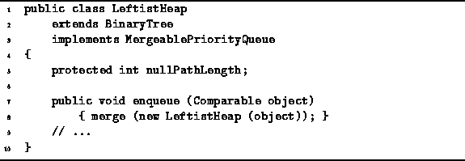

Data Structures and Algorithms
with Object-Oriented Design Patterns in Java
Data Structures and Algorithms
with Object-Oriented Design Patterns in Java
The enqueue method of the LeftistHeap class
is used to put items into the heap.
enqueue is easily implemented using the merge operation.
That is, to enqueue an item in a given heap,
we simply create a new heap containing the one item to be enqueued
and merge it with the given heap.
The algorithm to do this is shown in Program  .
.

Program: LeftistHeap class enqueue method.
The expression for the running time for the insert operation follows directly from that of the merge operation. That is, the time required for the insert operation in the worst case is
where d is the null path length of the heap into which the item is inserted.
If we assume that two keys can be compared in constant time,
the running time for insert becomes simply  ,
where n is the number of nodes in the tree into which the item is inserted.
,
where n is the number of nodes in the tree into which the item is inserted.
 Copyright © 1998 by Bruno R. Preiss, P.Eng. All rights reserved.
Copyright © 1998 by Bruno R. Preiss, P.Eng. All rights reserved.